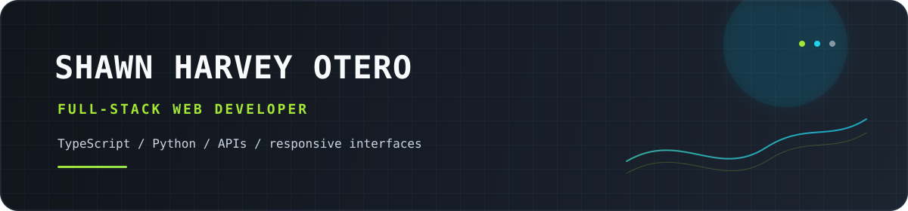

<!doctype html>
<!--
  PROTOTYPE QUESTION: What should Shawn's GitHub profile look like?
  Three radically different aesthetic structures, switchable with ?variant=A|B|C.
  This is throwaway UI exploration; it does not mutate GitHub or the real README.
-->
<html lang="en">
  <head>
    <meta charset="UTF-8" />
    <meta name="viewport" content="width=device-width, initial-scale=1.0" />
    <title>Profile design study — Shawn Harvey Otero</title>
    <style>
      :root {
        color-scheme: dark;
        --ink: #f8fafc;
        --muted: #a7b3c5;
        --line: rgba(148, 163, 184, 0.18);
        --lime: #a3e635;
        --cyan: #22d3ee;
        --navy: #0b1018;
        --violet: #a78bfa;
        --coral: #ff7a66;
      }

      * { box-sizing: border-box; }

      html { background: #070a0f; }

      body {
        margin: 0;
        min-width: 320px;
        background: #070a0f;
        color: var(--ink);
        font-family: Inter, ui-sans-serif, system-ui, -apple-system, BlinkMacSystemFont, "Segoe UI", sans-serif;
        transition: background 300ms ease, color 300ms ease;
      }

      a { color: inherit; text-decoration: none; }

      button {
        font: inherit;
        color: inherit;
      }

      .prototype-page {
        min-height: 100vh;
        padding: 34px 30px 118px;
        overflow: hidden;
      }

      .prototype-note {
        position: fixed;
        top: 18px;
        right: 22px;
        z-index: 4;
        padding: 8px 11px;
        border: 1px solid rgba(255, 255, 255, 0.15);
        border-radius: 999px;
        background: rgba(3, 6, 12, 0.72);
        color: rgba(255, 255, 255, 0.6);
        font: 700 10px/1 ui-monospace, SFMono-Regular, Consolas, monospace;
        letter-spacing: 0.14em;
        text-transform: uppercase;
        backdrop-filter: blur(16px);
      }

      .eyebrow {
        color: var(--lime);
        font: 700 11px/1.3 ui-monospace, SFMono-Regular, Consolas, monospace;
        letter-spacing: 0.18em;
        text-transform: uppercase;
      }

      .muted { color: var(--muted); }

      .switcher {
        position: fixed;
        z-index: 10;
        left: 50%;
        bottom: 22px;
        display: flex;
        align-items: center;
        gap: 15px;
        min-width: 258px;
        justify-content: space-between;
        padding: 9px 12px;
        transform: translateX(-50%);
        border: 1px solid rgba(255, 255, 255, 0.2);
        border-radius: 999px;
        background: rgba(11, 15, 23, 0.86);
        box-shadow: 0 14px 40px rgba(0, 0, 0, 0.32);
        color: white;
        backdrop-filter: blur(18px);
      }

      .switcher button {
        display: grid;
        width: 34px;
        height: 34px;
        place-items: center;
        border: 1px solid rgba(255, 255, 255, 0.2);
        border-radius: 50%;
        background: rgba(255, 255, 255, 0.08);
        cursor: pointer;
        font-size: 18px;
        transition: background 160ms ease, transform 160ms ease;
      }

      .switcher button:hover { background: rgba(255, 255, 255, 0.2); transform: scale(1.06); }

      .switcher-label { display: grid; gap: 3px; min-width: 132px; text-align: center; }

      .switcher-key {
        color: var(--lime);
        font: 800 12px/1 ui-monospace, SFMono-Regular, Consolas, monospace;
        letter-spacing: 0.1em;
      }

      .switcher-name { color: rgba(255, 255, 255, 0.7); font-size: 11px; }

      /* A — SIGNAL: split rail, dark studio, recruiter-friendly hierarchy. */
      .theme-a { background: #090d14; }

      .variant-a {
        background:
          radial-gradient(circle at 78% 4%, rgba(34, 211, 238, 0.08), transparent 25rem),
          linear-gradient(135deg, #0b1018 0%, #090d14 54%, #111925 100%);
      }

      .a-shell {
        width: min(1240px, 100%);
        margin: 0 auto;
        display: grid;
        grid-template-columns: minmax(260px, 0.72fr) minmax(0, 1.4fr);
        gap: clamp(28px, 6vw, 90px);
      }

      .a-rail {
        position: sticky;
        top: 36px;
        align-self: start;
        display: grid;
        gap: 26px;
        padding: 22px 0 30px;
      }

      .a-portrait {
        overflow: hidden;
        border: 1px solid rgba(148, 163, 184, 0.24);
        border-radius: 20px;
        box-shadow: 0 24px 80px rgba(0, 0, 0, 0.26);
      }

      .a-portrait img { display: block; width: 100%; }

      .a-rail h1 {
        max-width: 360px;
        margin: 0;
        font-size: clamp(34px, 4.4vw, 62px);
        line-height: 0.95;
        letter-spacing: -0.07em;
      }

      .a-rail h1 span { color: var(--cyan); }

      .a-rail-copy { max-width: 360px; margin: 0; color: var(--muted); font-size: 15px; line-height: 1.7; }

      .a-links { display: flex; flex-wrap: wrap; gap: 9px; }

      .a-link {
        padding: 9px 12px;
        border: 1px solid rgba(163, 230, 53, 0.32);
        border-radius: 999px;
        color: #d9f99d;
        font-size: 12px;
      }

      .a-status {
        display: flex;
        align-items: center;
        gap: 9px;
        color: #cbd5e1;
        font: 700 11px/1.3 ui-monospace, SFMono-Regular, Consolas, monospace;
        letter-spacing: 0.08em;
        text-transform: uppercase;
      }

      .a-status i { width: 8px; height: 8px; border-radius: 50%; background: var(--lime); box-shadow: 0 0 18px var(--lime); }

      .a-main { padding: 22px 0 30px; }

      .a-main-head { display: flex; justify-content: space-between; gap: 18px; align-items: end; padding-bottom: 30px; border-bottom: 1px solid var(--line); }

      .a-main-head h2 { max-width: 680px; margin: 12px 0 0; font-size: clamp(36px, 6vw, 82px); line-height: 0.96; letter-spacing: -0.07em; }

      .a-main-head h2 em { color: var(--lime); font-style: normal; }

      .a-index { color: #64748b; font: 700 12px/1 ui-monospace, SFMono-Regular, Consolas, monospace; }

      .a-stats { display: grid; grid-template-columns: repeat(3, 1fr); gap: 1px; margin: 28px 0 0; border: 1px solid var(--line); background: var(--line); }

      .a-stat { min-height: 104px; padding: 17px; background: rgba(15, 23, 42, 0.54); }

      .a-stat strong { display: block; margin-bottom: 12px; color: var(--cyan); font-size: 27px; letter-spacing: -0.06em; }

      .a-stat span { color: var(--muted); font-size: 11px; line-height: 1.4; }

      .a-section { padding: 31px 0; border-bottom: 1px solid var(--line); }

      .a-section h3 { margin: 0 0 16px; font-size: 13px; letter-spacing: 0.12em; text-transform: uppercase; }

      .a-section p { max-width: 680px; margin: 0; color: #c6d0dc; font-size: 15px; line-height: 1.72; }

      .a-split { display: grid; grid-template-columns: 1fr 1fr; gap: 32px; }

      .a-list { display: grid; gap: 16px; margin: 0; padding: 0; list-style: none; }

      .a-list li { display: grid; gap: 5px; padding-left: 15px; border-left: 2px solid var(--lime); }

      .a-list strong { font-size: 14px; }

      .a-list span { color: var(--muted); font-size: 12px; line-height: 1.45; }

      .a-stack-groups { display: grid; gap: 22px; }

      .a-stack-group { display: grid; gap: 11px; }

      .a-stack-label { display: flex; align-items: baseline; justify-content: space-between; gap: 14px; color: #e2e8f0; font-size: 13px; }

      .a-stack-label small { color: #64748b; font: 700 10px/1 ui-monospace, SFMono-Regular, Consolas, monospace; letter-spacing: 0.1em; text-transform: uppercase; }

      .a-icon-row { display: flex; flex-wrap: wrap; gap: 9px; }

      .a-icon-card { display: inline-flex; align-items: center; gap: 8px; min-height: 49px; padding: 7px 10px 7px 7px; border: 1px solid rgba(34, 211, 238, 0.22); border-radius: 9px; background: rgba(15, 23, 42, 0.55); color: #c5f7ff; font: 600 11px/1 ui-monospace, SFMono-Regular, Consolas, monospace; transition: border-color 160ms ease, transform 160ms ease, background 160ms ease; }

      .a-icon-card:hover { border-color: rgba(163, 230, 53, 0.7); background: rgba(30, 41, 59, 0.85); transform: translateY(-2px); }

      .a-icon-card img { width: 32px; height: 32px; object-fit: contain; }

      .a-snake { display: grid; gap: 15px; }

      .a-snake-intro { max-width: 660px; margin: -3px 0 2px; color: var(--muted); font-size: 13px; line-height: 1.6; }

      .a-github-grid { display: grid; grid-template-columns: repeat(2, minmax(0, 1fr)); gap: 14px; }

      .a-github-card { display: flex; min-width: 0; align-items: center; justify-content: center; overflow: hidden; padding: 12px; border: 1px solid rgba(34, 211, 238, 0.22); border-radius: 12px; background: #0b1018; box-shadow: inset 0 1px 0 rgba(255, 255, 255, 0.03); }

      .a-github-card.wide { grid-column: 1 / -1; }

      .a-github-card img { display: block; width: 100%; height: auto; max-height: 220px; object-fit: contain; }

      .a-3d-card { position: relative; display: grid; gap: 10px; align-items: stretch; overflow: hidden; background: radial-gradient(circle at 78% 12%, rgba(163, 230, 53, 0.12), transparent 28%), linear-gradient(135deg, #0b1018, #111925); }

      .a-3d-card::after { position: absolute; inset: 0; border: 1px solid rgba(163, 230, 53, 0.28); border-radius: inherit; box-shadow: inset 0 0 40px rgba(34, 211, 238, 0.05); content: ""; pointer-events: none; }

      .a-3d-meta { display: flex; align-items: center; justify-content: space-between; gap: 14px; color: #c5f7ff; font: 700 10px/1.2 ui-monospace, SFMono-Regular, Consolas, monospace; letter-spacing: 0.13em; text-transform: uppercase; }

      .a-3d-meta strong { color: var(--lime); }

      .a-3d-card img { position: relative; z-index: 1; width: 100%; max-height: 430px; filter: hue-rotate(140deg) saturate(1.2) contrast(1.05) brightness(0.92); opacity: 0.92; }

      .a-summary-strip { display: grid; grid-column: 1 / -1; grid-template-columns: repeat(3, minmax(0, 1fr)); gap: 14px; }

      .a-summary-strip .a-github-card { min-height: 168px; }

      .a-snake-frame { display: grid; gap: 12px; overflow: hidden; padding: 14px; border: 1px solid rgba(34, 211, 238, 0.42); border-radius: 14px; background: radial-gradient(circle at 90% 0%, rgba(34, 211, 238, 0.13), transparent 34%), linear-gradient(135deg, #0b1018, #111925); box-shadow: 0 0 42px rgba(34, 211, 238, 0.07); }

      .a-snake-caption { display: flex; justify-content: space-between; gap: 14px; color: #94a3b8; font: 700 10px/1.2 ui-monospace, SFMono-Regular, Consolas, monospace; letter-spacing: 0.13em; text-transform: uppercase; }

      .a-snake-caption strong { color: var(--lime); font-weight: 700; }

      .a-snake-frame img { display: block; width: 100%; max-height: none; object-fit: contain; border: 1px solid rgba(163, 230, 53, 0.2); border-radius: 9px; opacity: 0.94; }

      .a-brand-snake { display: grid; gap: 10px; padding: 14px; border: 1px solid rgba(163, 230, 53, 0.32); border-radius: 14px; background: #000; box-shadow: inset 0 0 34px rgba(34, 211, 238, 0.06), 0 0 32px rgba(163, 230, 53, 0.05); }

      .a-brand-snake-head { display: flex; align-items: center; justify-content: space-between; gap: 12px; color: #94a3b8; font: 700 10px/1.2 ui-monospace, SFMono-Regular, Consolas, monospace; letter-spacing: 0.13em; text-transform: uppercase; }

      .a-brand-snake-head strong { color: var(--cyan); }

      .a-brand-grid { position: relative; display: grid; grid-template-rows: repeat(7, minmax(5px, 1fr)); grid-auto-flow: column; grid-auto-columns: minmax(4px, 1fr); gap: 4px; min-height: 108px; padding: 9px; border: 1px solid rgba(34, 211, 238, 0.18); border-radius: 9px; background: #000; }

      .a-contrib-cell { position: relative; z-index: 1; aspect-ratio: 1; min-width: 0; border-radius: 2px; box-shadow: inset 0 0 0 1px rgba(255, 255, 255, 0.03); }

      .a-contrib-cell.l0 { background: #000; box-shadow: inset 0 0 0 1px rgba(36, 52, 71, 0.74); }
      .a-contrib-cell.l1 { background: #0e7490; }
      .a-contrib-cell.l2 { background: #0891b2; }
      .a-contrib-cell.l3 { background: #22d3ee; }
      .a-contrib-cell.l4 { background: #67e8f9; }
      .a-contrib-cell.l5 { background: #a3e635; }

      .a-snake-overlay { position: absolute; inset: 9px; z-index: 2; width: calc(100% - 18px); height: calc(100% - 18px); pointer-events: none; }

      .a-snake-path { fill: none; stroke: var(--lime); stroke-width: 1.15; stroke-linecap: round; filter: drop-shadow(0 0 3px rgba(163, 230, 53, 0.9)); stroke-dasharray: 0.17 0.83; animation: snake-travel 5.5s linear infinite; }

      @keyframes snake-travel { to { stroke-dashoffset: -1; } }

      .a-brand-snake-foot { display: flex; align-items: center; justify-content: space-between; gap: 12px; color: #64748b; font: 700 10px/1.2 ui-monospace, SFMono-Regular, Consolas, monospace; letter-spacing: 0.08em; text-transform: uppercase; }

      .a-snake-legend { display: inline-flex; align-items: center; gap: 4px; }

      .a-snake-legend i { display: block; width: 10px; height: 10px; border-radius: 2px; }

      .a-snake-legend .l0 { background: #000; border: 1px solid #243447; }
      .a-snake-legend .l1 { background: #0e7490; }
      .a-snake-legend .l2 { background: #0891b2; }
      .a-snake-legend .l3 { background: #22d3ee; }
      .a-snake-legend .l4 { background: #67e8f9; }
      .a-snake-legend .l5 { background: #a3e635; }

      /* B — CONSOLE: a command-line identity system with denser, more technical rhythm. */
      .theme-b { background: #030605; }

      .variant-b {
        color: #d8ffe3;
        background:
          linear-gradient(rgba(42, 255, 117, 0.035) 1px, transparent 1px),
          linear-gradient(90deg, rgba(42, 255, 117, 0.035) 1px, transparent 1px),
          #030605;
        background-size: 28px 28px;
        font-family: ui-monospace, SFMono-Regular, Consolas, "Liberation Mono", monospace;
      }

      .variant-b .prototype-note { border-color: rgba(42, 255, 117, 0.3); background: rgba(0, 18, 8, 0.82); color: #67f99a; }

      .b-terminal { width: min(1120px, 100%); margin: 30px auto 0; border: 1px solid rgba(42, 255, 117, 0.28); box-shadow: 0 0 100px rgba(42, 255, 117, 0.06); }

      .b-chrome { display: flex; align-items: center; justify-content: space-between; gap: 14px; padding: 12px 16px; border-bottom: 1px solid rgba(42, 255, 117, 0.2); background: rgba(16, 38, 22, 0.56); color: #74ee9b; font-size: 11px; }

      .b-lights { display: flex; gap: 6px; }

      .b-lights i { width: 8px; height: 8px; border-radius: 50%; background: #ef4444; }
      .b-lights i:nth-child(2) { background: #facc15; }
      .b-lights i:nth-child(3) { background: #4ade80; }

      .b-intro { display: grid; grid-template-columns: 1.1fr 0.9fr; gap: 30px; padding: clamp(26px, 6vw, 74px); border-bottom: 1px solid rgba(42, 255, 117, 0.2); }

      .b-prompt { margin: 0 0 22px; color: #4ade80; font-size: 12px; }

      .b-intro h1 { max-width: 680px; margin: 0; color: #effff3; font-size: clamp(42px, 7vw, 91px); line-height: 0.93; letter-spacing: -0.09em; }

      .b-intro h1 span { color: #4ade80; }

      .b-lede { max-width: 430px; align-self: end; margin: 0; color: #8bb89a; font: 15px/1.75 ui-sans-serif, system-ui, sans-serif; }

      .b-body { display: grid; grid-template-columns: 0.9fr 1.1fr; }

      .b-col { padding: 30px clamp(24px, 4vw, 52px) 42px; }

      .b-col + .b-col { border-left: 1px solid rgba(42, 255, 117, 0.2); }

      .b-label { display: block; margin-bottom: 22px; color: #4ade80; font-size: 11px; letter-spacing: 0.1em; }

      .b-command { display: grid; grid-template-columns: auto 1fr; gap: 12px; margin-bottom: 22px; font-size: 13px; line-height: 1.6; }

      .b-command > b { color: #4ade80; font-weight: 500; }

      .b-command p { margin: 0; color: #b9eac5; }

      .b-command p small { display: block; margin-top: 4px; color: #6b9878; font: 12px/1.5 ui-sans-serif, system-ui, sans-serif; }

      .b-meter { display: grid; gap: 11px; }

      .b-meter-row { display: grid; grid-template-columns: 94px 1fr 32px; align-items: center; gap: 10px; color: #94c5a2; font-size: 11px; }

      .b-meter-row i { height: 6px; overflow: hidden; border-radius: 999px; background: rgba(42, 255, 117, 0.12); }

      .b-meter-row i::after { display: block; width: var(--fill); height: 100%; border-radius: inherit; background: #4ade80; content: ""; }

      .b-meter-row em { color: #4ade80; font-style: normal; text-align: right; }

      .b-timeline { position: relative; display: grid; gap: 24px; padding-left: 20px; }

      .b-timeline::before { position: absolute; top: 4px; bottom: 4px; left: 3px; width: 1px; background: rgba(42, 255, 117, 0.3); content: ""; }

      .b-event { position: relative; display: grid; gap: 6px; }

      .b-event::before { position: absolute; top: 4px; left: -20px; width: 7px; height: 7px; border: 1px solid #4ade80; border-radius: 50%; background: #030605; content: ""; }

      .b-event time { color: #4ade80; font-size: 11px; }

      .b-event strong { color: #effff3; font-size: 14px; }

      .b-event p { max-width: 480px; margin: 0; color: #7fa98a; font: 13px/1.6 ui-sans-serif, system-ui, sans-serif; }

      .b-footer { display: flex; flex-wrap: wrap; justify-content: space-between; gap: 15px; padding: 15px 20px; border-top: 1px solid rgba(42, 255, 117, 0.2); color: #679b75; font-size: 11px; }

      .b-footer strong { color: #4ade80; font-weight: 500; }

      /* C — EDITORIAL: warm paper, oversized type, timeline-led magazine composition. */
      .theme-c { color-scheme: light; background: #e7e0d4; }

      .variant-c { color: #171717; background: #e7e0d4; font-family: Inter, ui-sans-serif, system-ui, sans-serif; }

      .variant-c .prototype-note { border-color: rgba(23, 23, 23, 0.2); background: rgba(231, 224, 212, 0.84); color: #171717; }

      .c-page { width: min(1220px, 100%); margin: 0 auto; }

      .c-masthead { display: flex; align-items: center; justify-content: space-between; gap: 18px; padding: 11px 0; border-bottom: 2px solid #171717; font: 700 11px/1.2 ui-monospace, SFMono-Regular, Consolas, monospace; letter-spacing: 0.12em; text-transform: uppercase; }

      .c-masthead span:last-child { color: #e65339; }

      .c-hero { position: relative; display: grid; grid-template-columns: minmax(0, 1.5fr) 0.5fr; min-height: 480px; padding: clamp(30px, 7vw, 100px) 0 60px; border-bottom: 1px solid #171717; }

      .c-title { margin: 0; font: 800 clamp(72px, 14vw, 190px)/0.75 Arial Black, Impact, sans-serif; letter-spacing: -0.105em; text-transform: uppercase; }

      .c-title span { display: block; }

      .c-title span:nth-child(2) { margin-left: 0.2em; color: #e65339; }

      .c-title span:nth-child(3) { margin-left: 0.07em; }

      .c-stamp { align-self: end; justify-self: end; display: grid; width: 148px; height: 148px; place-items: center; transform: rotate(7deg); border: 1px solid #171717; border-radius: 50%; color: #e65339; font: 800 13px/1.15 ui-monospace, SFMono-Regular, Consolas, monospace; letter-spacing: 0.08em; text-align: center; text-transform: uppercase; }

      .c-stamp::after { position: absolute; width: 126px; height: 126px; border: 1px dashed #e65339; border-radius: 50%; content: ""; }

      .c-intro { display: grid; grid-template-columns: 0.75fr 1.25fr; gap: 40px; padding: 28px 0 38px; border-bottom: 1px solid #171717; }

      .c-intro-label { color: #e65339; font: 800 12px/1.3 ui-monospace, SFMono-Regular, Consolas, monospace; letter-spacing: 0.12em; text-transform: uppercase; }

      .c-intro p { max-width: 680px; margin: 0; font: 500 clamp(20px, 3vw, 31px)/1.18 Georgia, serif; letter-spacing: -0.03em; }

      .c-grid { display: grid; grid-template-columns: 1fr 1fr; gap: 0; border-bottom: 1px solid #171717; }

      .c-block { min-height: 270px; padding: 28px 28px 30px 0; }

      .c-block + .c-block { padding: 28px 0 30px 28px; border-left: 1px solid #171717; }

      .c-block h2 { margin: 0 0 28px; font: 800 12px/1.2 ui-monospace, SFMono-Regular, Consolas, monospace; letter-spacing: 0.12em; text-transform: uppercase; }

      .c-block h2 span { color: #e65339; }

      .c-block p { max-width: 460px; margin: 0; font: 16px/1.7 Georgia, serif; }

      .c-roles { display: grid; gap: 18px; }

      .c-role { display: grid; grid-template-columns: 82px 1fr; gap: 15px; padding-top: 13px; border-top: 1px solid rgba(23, 23, 23, 0.32); }

      .c-role time { color: #e65339; font: 700 11px/1.3 ui-monospace, SFMono-Regular, Consolas, monospace; }

      .c-role strong { display: block; margin-bottom: 5px; font-size: 14px; }

      .c-role span { display: block; color: #55504a; font: 13px/1.45 Georgia, serif; }

      .c-stack { display: flex; flex-wrap: wrap; gap: 7px; }

      .c-stack span { padding: 8px 10px; border: 1px solid #171717; border-radius: 999px; font: 700 11px/1 ui-monospace, SFMono-Regular, Consolas, monospace; }

      .c-bottom { display: grid; grid-template-columns: 1fr 1fr; gap: 40px; padding: 28px 0 10px; }

      .c-bottom h2 { margin: 0 0 14px; color: #e65339; font: 800 12px/1.2 ui-monospace, SFMono-Regular, Consolas, monospace; letter-spacing: 0.12em; text-transform: uppercase; }

      .c-bottom p { margin: 0; font: 16px/1.5 Georgia, serif; }

      .c-bottom a { border-bottom: 1px solid #e65339; }

      @media (max-width: 800px) {
        .prototype-page { padding: 22px 18px 118px; }
        .a-shell, .b-intro, .b-body, .c-hero, .c-intro, .c-grid, .c-bottom, .a-github-grid, .a-summary-strip { grid-template-columns: 1fr; }
        .a-rail { position: static; }
        .a-main-head { align-items: start; flex-direction: column; }
        .a-split { grid-template-columns: 1fr; gap: 28px; }
        .b-col + .b-col { border-top: 1px solid rgba(42, 255, 117, 0.2); border-left: 0; }
        .c-title { font-size: clamp(60px, 20vw, 150px); }
        .c-stamp { position: absolute; right: 0; bottom: 35px; width: 118px; height: 118px; }
        .c-stamp::after { width: 100px; height: 100px; }
        .c-block, .c-block + .c-block { min-height: auto; padding: 28px 0; border-left: 0; }
        .c-block + .c-block { border-top: 1px solid #171717; }
      }

      @media (prefers-reduced-motion: reduce) {
        * { scroll-behavior: auto !important; transition: none !important; }
      }
    </style>
  </head>
  <body>
    <div id="app"></div>
    <div id="switcher-root"></div>

    <script>
      const variants = [
        { key: "A", name: "Signal / split rail", theme: "theme-a", render: VariantA },
        { key: "B", name: "Console / command center", theme: "theme-b", render: VariantB },
        { key: "C", name: "Editorial / paper issue", theme: "theme-c", render: VariantC },
      ];

      function PrototypeNote() {
        return '<div class="prototype-note">aesthetic study · throwaway</div>';
      }

      function BrandContributionGrid() {
        const columns = 52;
        const rows = 7;
        let cells = '';

        for (let column = 0; column < columns; column += 1) {
          for (let row = 0; row < rows; row += 1) {
            const signal = (column * 11 + row * 7 + (column % 5) * 3) % 23;
            const level = signal < 7 ? 0 : signal < 11 ? 1 : signal < 15 ? 2 : signal < 19 ? 3 : signal < 22 ? 4 : 5;
            cells += `<span class="a-contrib-cell l${level}" aria-hidden="true"></span>`;
          }
        }

        return `
          <div class="a-brand-snake" id="brand-contribution-preview">
            <div class="a-brand-snake-head"><span><strong>Brand contribution grid</strong> / prototype</span><span>blue signal · green snake</span></div>
            <div class="a-brand-grid" role="img" aria-label="Prototype contribution grid with black empty cells, blue contribution levels, and a lime animated snake">
              ${cells}
              <svg class="a-snake-overlay" viewBox="0 0 100 16" preserveAspectRatio="none" aria-hidden="true">
                <path class="a-snake-path" pathLength="1" d="M1 13 C7 13 7 3 13 3 S25 13 31 13 S43 3 49 3 S61 13 67 13 S79 3 85 3 S92 13 99 7" />
              </svg>
            </div>
            <div class="a-brand-snake-foot"><span>empty → active</span><span class="a-snake-legend"><i class="l0"></i><i class="l1"></i><i class="l2"></i><i class="l3"></i><i class="l4"></i><i class="l5"></i></span><span>lime snake</span></div>
          </div>`;
      }

      function VariantA() {
        return `
          ${PrototypeNote()}
          <main class="prototype-page variant-a">
            <div class="a-shell">
              <aside class="a-rail">
                <div class="a-portrait"></div>
                <div>
                  <div class="eyebrow">Shawn Harvey Otero</div>
                  <h1>Build what <span>people</span> can use.</h1>
                </div>
                <p class="a-rail-copy">Full-stack web developer from Bohol, Philippines. I turn real requirements into maintainable products, APIs, and responsive interfaces.</p>
                <div class="a-links"><a class="a-link" href="mailto:oteroshawnharvey@gmail.com">Email</a><a class="a-link" href="https://github.com/SHAWNZgowN">GitHub</a></div>
                <div class="a-status"><i></i> open to thoughtful problems</div>
              </aside>

              <section class="a-main">
                <header class="a-main-head">
                  <div><div class="eyebrow">01 — profile signal</div><h2>Useful systems.<br /><em>Clear interfaces.</em></h2></div>
                  <div class="a-index">SCROLL / READ</div>
                </header>

                <div class="a-stats">
                  <div class="a-stat"><strong>21</strong><span>public repositories</span></div>
                  <div class="a-stat"><strong>TS</strong><span>primary build language</span></div>
                  <div class="a-stat"><strong>PH</strong><span>Bohol, Philippines</span></div>
                </div>

                <section class="a-section"><h3>What I build</h3><p>Content management systems, booking and ticketing workflows, backend APIs, and data-driven web experiences with a focus on reliable flows and readable code.</p></section>

                <section class="a-section a-split">
                  <div><h3>Experience</h3><ul class="a-list"><li><strong>Web Developer Intern</strong><span>ACE Medical Center - Bohol · Feb–May 2026</span></li><li><strong>Backend systems</strong><span>TypeScript · NestJS · GraphQL · Apollo · Prisma</span></li></ul></div>
                  <div><h3>Education</h3><ul class="a-list"><li><strong>BS Information Technology</strong><span>Cum Laude · Bohol Island State University</span></li><li><strong>Languages</strong><span>English · Bisaya · Filipino</span></li></ul></div>
                </section>

                <section class="a-section"><h3>Stack, separated by role</h3><div class="a-stack-groups">
                  <div class="a-stack-group"><div class="a-stack-label"><strong>Languages</strong><small>the primitives</small></div><div class="a-icon-row"><span class="a-icon-card">TypeScript</span><span class="a-icon-card">JavaScript</span><span class="a-icon-card">Python</span><span class="a-icon-card">PHP</span></div></div>
                  <div class="a-stack-group"><div class="a-stack-label"><strong>Frontend</strong><small>the visible layer</small></div><div class="a-icon-row"><span class="a-icon-card">React</span><span class="a-icon-card">Vue</span><span class="a-icon-card">Tailwind</span><span class="a-icon-card">HTML</span><span class="a-icon-card">CSS</span></div></div>
                  <div class="a-stack-group"><div class="a-stack-label"><strong>Backend</strong><small>the service layer</small></div><div class="a-icon-row"><span class="a-icon-card">NestJS</span><span class="a-icon-card">Django</span><span class="a-icon-card">Laravel</span></div></div>
                  <div class="a-stack-group"><div class="a-stack-label"><strong>Data &amp; APIs</strong><small>the connective tissue</small></div><div class="a-icon-row"><span class="a-icon-card">GraphQL</span><span class="a-icon-card">Apollo</span><span class="a-icon-card">PostgreSQL</span><span class="a-icon-card">Prisma</span><span class="a-icon-card">REST APIs</span></div></div>
                  <div class="a-stack-group"><div class="a-stack-label"><strong>Tools &amp; workflow</strong><small>the daily loop</small></div><div class="a-icon-row"><span class="a-icon-card">Git</span><span class="a-icon-card">GitHub</span><span class="a-icon-card">VS Code</span></div></div>
                </div></section>

                <section class="a-section a-snake">
                  <div><h3>GitHub signals</h3><p class="a-snake-intro">A compact read on activity, language mix, streaks, and contribution rhythm—kept inside the same navy, lime, and cyan visual system.</p></div>
                  <div class="a-github-grid">
                    <div class="a-github-card"></div>
                    <div class="a-github-card"></div>
                    <div class="a-github-card wide"></div>
                    <div class="a-summary-strip"><div class="a-github-card"></div><div class="a-github-card"></div><div class="a-github-card"></div></div>
                    <div class="a-github-card wide"></div>
                    <div class="a-github-card wide a-3d-card" id="brand-3d-preview"><div class="a-3d-meta"><span><strong>3D contribution profile</strong> / reference composition</span><span>brand remap</span></div></div>
                  </div>
                  ${BrandContributionGrid()}
                </section>
              </section>
            </div>
          </main>`;
      }

      function VariantB() {
        return `
          ${PrototypeNote()}
          <main class="prototype-page variant-b">
            <section class="b-terminal">
              <div class="b-chrome"><span class="b-lights"><i></i><i></i><i></i></span><span>shawn@github: ~/profile</span><span>STATUS: ONLINE</span></div>
              <div class="b-intro"><div><p class="b-prompt">$ whoami</p><h1>Shawn<br /><span>Harvey</span><br />Otero</h1></div><p class="b-lede">A command-line inspired profile for a developer who cares about what happens between the idea and the working product.</p></div>
              <div class="b-body">
                <div class="b-col">
                  <span class="b-label">[ capabilities ]</span>
                  <div class="b-command"><b>01</b><p>build --practical<small>Web products, CMS workflows, booking systems, and APIs.</small></p></div>
                  <div class="b-command"><b>02</b><p>think --reliable<small>Clear data relationships, readable flows, and maintainable features.</small></p></div>
                  <div class="b-command"><b>03</b><p>ship --responsive<small>Interfaces that hold together across devices and real usage.</small></p></div>
                  <span class="b-label">[ stack.signal ]</span>
                  <div class="b-meter"><div class="b-meter-row"><span>TypeScript</span><i style="--fill: 92%"></i><em>92</em></div><div class="b-meter-row"><span>Backend</span><i style="--fill: 88%"></i><em>88</em></div><div class="b-meter-row"><span>Data</span><i style="--fill: 82%"></i><em>82</em></div><div class="b-meter-row"><span>Interface</span><i style="--fill: 76%"></i><em>76</em></div></div>
                </div>
                <div class="b-col">
                  <span class="b-label">[ timeline.log ]</span>
                  <div class="b-timeline"><article class="b-event"><time>2026.02 — 2026.05</time><strong>Web Developer Intern · ACE Medical Center - Bohol</strong><p>Content management, GraphQL retrieval, Prisma relationships, testing, and debugging.</p></article><article class="b-event"><time>EDUCATION</time><strong>BS Information Technology · Cum Laude</strong><p>Bohol Island State University - Balilihan Campus.</p></article><article class="b-event"><time>LANGUAGES</time><strong>English · Bisaya · Filipino</strong><p>Three ways to explain the same useful thing.</p></article></div>
                </div>
              </div>
              <footer class="b-footer"><span><strong>contact</strong> → oteroshawnharvey@gmail.com</span><span><strong>location</strong> → Bohol, Philippines</span><span><strong>repo</strong> → SHAWNZgowN</span></footer>
            </section>
          </main>`;
      }

      function VariantC() {
        return `
          ${PrototypeNote()}
          <main class="prototype-page variant-c">
            <div class="c-page">
              <header class="c-masthead"><span>Issue 01 · Developer profile</span><span>Bohol, Philippines · 2026</span></header>
              <section class="c-hero"><h1 class="c-title"><span>Shawn</span><span>Harvey</span><span>Otero</span></h1><div class="c-stamp">Full-stack<br />web<br />developer</div></section>
              <section class="c-intro"><div class="c-intro-label">The premise</div><p>I build practical web products with clear workflows, reliable data, and interfaces that make the next action obvious.</p></section>
              <section class="c-grid">
                <article class="c-block"><h2><span>01</span> / Practice</h2><p>Content management systems, booking and ticketing workflows, backend APIs, and thoughtful responsive experiences.</p><div class="c-stack" style="margin-top: 27px"><span>TypeScript</span><span>GraphQL</span><span>PostgreSQL</span><span>Prisma</span><span>NestJS</span><span>Python</span></div></article>
                <article class="c-block"><h2><span>02</span> / Experience</h2><div class="c-roles"><div class="c-role"><time>2026</time><div><strong>Web Developer Intern</strong><span>ACE Medical Center - Bohol. CMS features, structured content retrieval, data relationships, testing.</span></div></div><div class="c-role"><time>EDU</time><div><strong>BS Information Technology</strong><span>Cum Laude · Bohol Island State University - Balilihan Campus.</span></div></div><div class="c-role"><time>LANG</time><div><strong>English · Bisaya · Filipino</strong><span>Communication is part of the interface.</span></div></div></div></article>
              </section>
              <section class="c-bottom"><div><h2>03 / Correspondence</h2><p><a href="mailto:oteroshawnharvey@gmail.com">oteroshawnharvey@gmail.com</a><br /><a href="https://github.com/SHAWNZgowN">github.com/SHAWNZgowN</a></p></div><div><h2>04 / Activity</h2><p>Contribution trail, visible below in the full profile. A quiet record of showing up and making things work.</p></div></section>
            </div>
          </main>`;
      }

      function Switcher({ index }) {
        const variant = variants[index];
        return `<nav class="switcher" aria-label="Prototype variant switcher"><button type="button" data-step="-1" aria-label="Previous variant">←</button><span class="switcher-label" aria-live="polite"><span class="switcher-key">${variant.key}</span><span class="switcher-name">${variant.name}</span></span><button type="button" data-step="1" aria-label="Next variant">→</button></nav>`;
      }

      function setVariant(nextIndex, writeUrl = true) {
        const index = (nextIndex + variants.length) % variants.length;
        const variant = variants[index];
        document.body.className = variant.theme;
        document.getElementById("app").innerHTML = variant.render();
        document.getElementById("switcher-root").innerHTML = Switcher({ index });
        if (writeUrl) history.replaceState(null, "", `${location.pathname}?variant=${variant.key}`);
      }

      const requested = new URLSearchParams(location.search).get("variant");
      const initialIndex = Math.max(0, variants.findIndex((variant) => variant.key === (requested || "A").toUpperCase()));
      setVariant(initialIndex, false);

      document.addEventListener("click", (event) => {
        const button = event.target.closest("[data-step]");
        if (!button) return;
        const currentKey = new URLSearchParams(location.search).get("variant") || variants[initialIndex].key;
        const currentIndex = variants.findIndex((variant) => variant.key === currentKey.toUpperCase());
        setVariant(currentIndex + Number(button.dataset.step));
      });

      document.addEventListener("keydown", (event) => {
        const tag = event.target.tagName;
        if (tag === "INPUT" || tag === "TEXTAREA" || event.target.isContentEditable) return;
        if (event.key === "ArrowLeft" || event.key === "ArrowRight") {
          event.preventDefault();
          const currentKey = new URLSearchParams(location.search).get("variant") || variants[initialIndex].key;
          const currentIndex = variants.findIndex((variant) => variant.key === currentKey.toUpperCase());
          setVariant(currentIndex + (event.key === "ArrowRight" ? 1 : -1));
        }
      });
    </script>
  </body>
</html>
